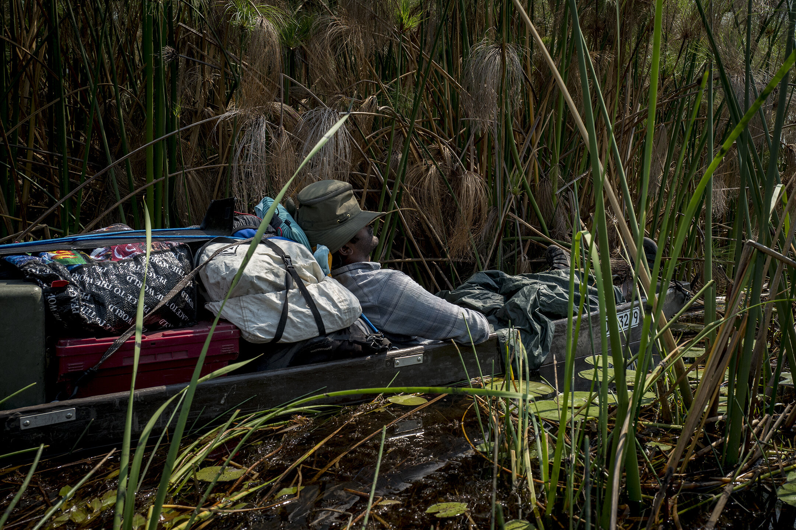
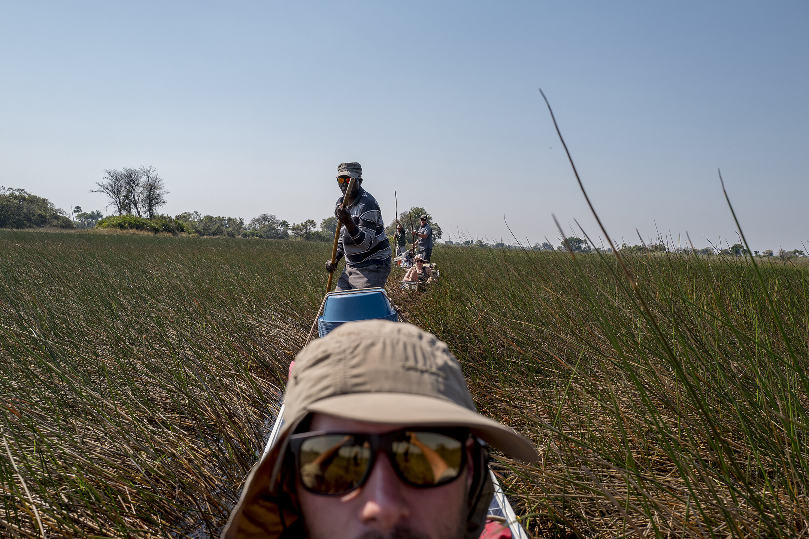
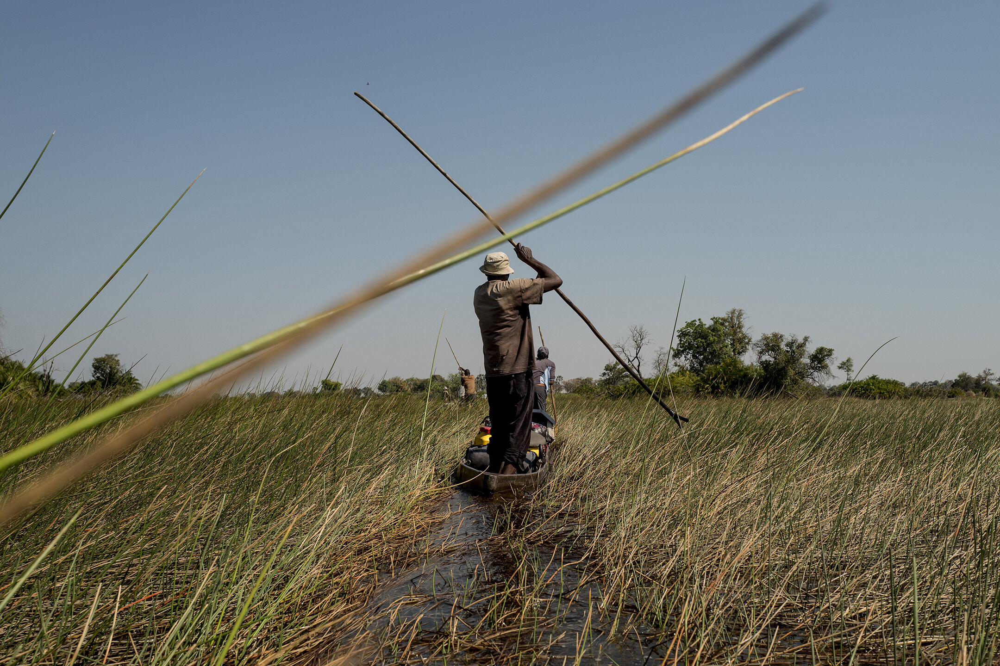
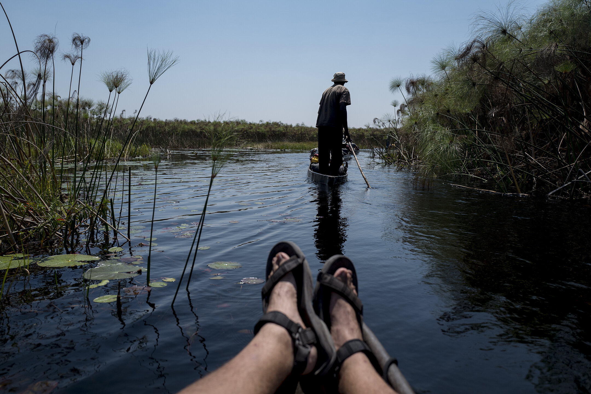
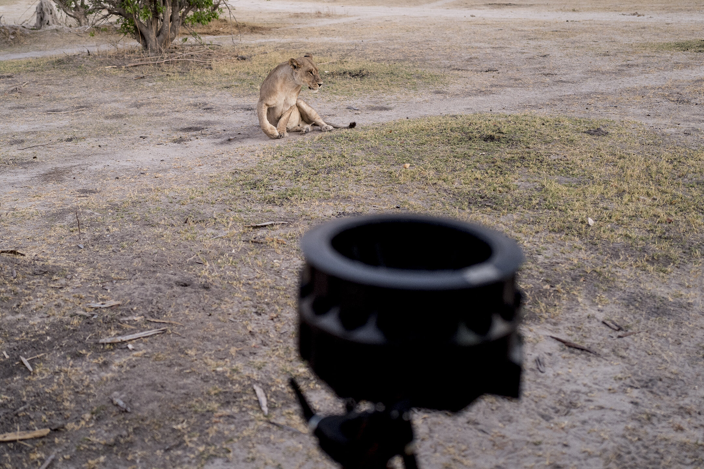

National Geographic
The Okavango Experience
Roles: Director · DP · Producer
Over the course of three weeks I had the incredible privilege to join a group of conservationists on an expedition across the Okavango Delta in Botswana. It was an incredibly challenging and rewarding journey that culminated in a 4-part VR series shot for National Geographic.
The series follows a team of conservationists on an expedition across the Okavango Delta, one of the last surviving wetland wildernesses on the planet. Best viewed in a VR headset through the National Geographic VR app or YouTube VR app.